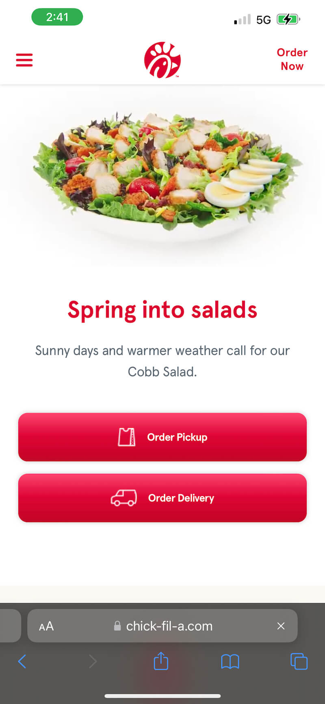

Tesla Motors
tesla.comI believe the Tesla website demonstrates good use of the alignment principle. All the info and buttons are in the center of the page, right in the visitor's view. Additionally, the text and buttons are centered around the picture of the car, which makes for a nice visual aesthetic.
Apple
apple.comI believe apple does a great job of applying the principle of white space and clean design. They don't have a ton of things on the page, just what they want you to focus on. They also use very professional colors and fonts that produces a very clean overall look and feel.
Chick-fil-A
chick-fil-a.com I believe Chick-fil-A effectivly applies the principle of Hick's law. There are very few elements on the page, but the things that are on the page are the main reasons a customer would come to the website. As a user, I would not have to be on this website very long to decide what I wanted to click on.